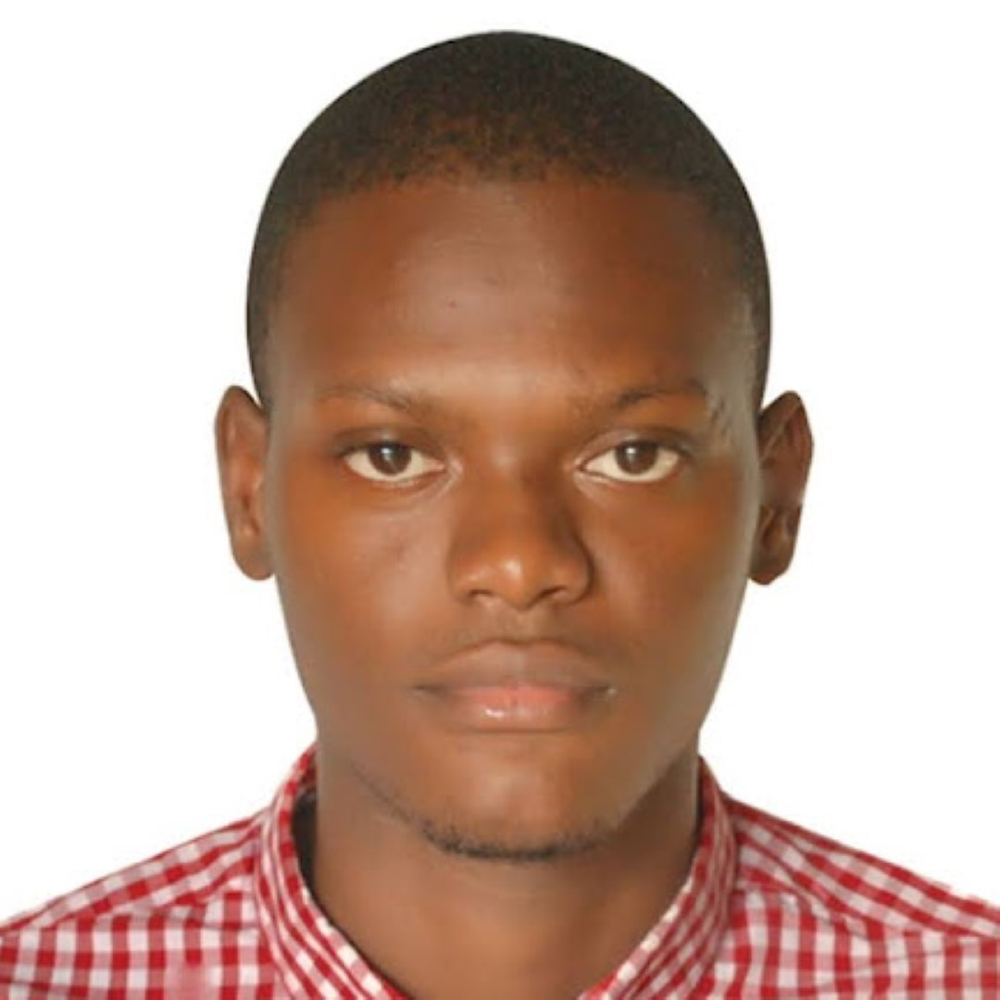

I'm a researcher and data analyst working across development economics, humanitarian response, and applied machine learning. My work runs from climate-and-conflict econometrics and child-poverty & social-protection analysis, through survey and RCT data systems, to deep-learning tools for health - using R, Stata, Python and GIS across Benin, Côte d'Ivoire, Nigeria, Sudan, and the Lake Chad basin.

Panel econometrics linking temperature, rainfall, and vegetation anomalies to conflict intensity - tested at district and grid-cell level across the Lake Chad basin (Cameroon, Chad, Niger, Nigeria).
Measuring child and multidimensional poverty and the gap between where deprivation is worst and where assistance is delivered - from Côte d'Ivoire's official N-MODA report to Nigeria's social register.
Deep learning for health in low-resource settings - including a web-based tool that classifies colposcopy images for cervical-cancer screening and shows clinicians where the lesion is.
Survey and sampling design, RCT high-frequency quality checks, and humanitarian needs-assessment pipelines - built with R, Stata, and tools like Kobo, ODK, and CsPro across multi-country operations.
Research cycle management across a portfolio of humanitarian assessments in Sudan - MSNA and Rapid Needs Assessment design, food security/livelihoods data collection in Kordofan, displacement-site mapping, and the JMMI dashboard.
Master's thesis: compared three deep-learning pipelines to classify colposcopy images across six diagnostic classes (best: VGG-19, 89.17% accuracy), then deployed the model as a real-time, multilingual web tool for clinicians at the Parakou hospital (CHUD-B/A).
State-level analysis showing that Nigeria's highest-poverty states receive the lowest social assistance coverage - a targeting mismatch visible across 37 states and 3 national programs.
Led the underlying data analysis for Côte d'Ivoire's official N-MODA report - 8.6 million children (62.5%) found to be multidimensionally poor. Published by the Ministry of Economy, Plan & Development with UNICEF.
Companion analysis to N-MODA: despite 44% GDP growth (2019-2024), social-sector budget share fell from 28.7% to 22.7% - with a simulation projecting education recovery under increased 2025 spending.
District- and cell-level fixed-effects panel models (2009-2022, 92 districts) testing whether temperature, drought, and vegetation anomalies predict Boko Haram conflict intensity - and whether cropland share amplifies that effect.